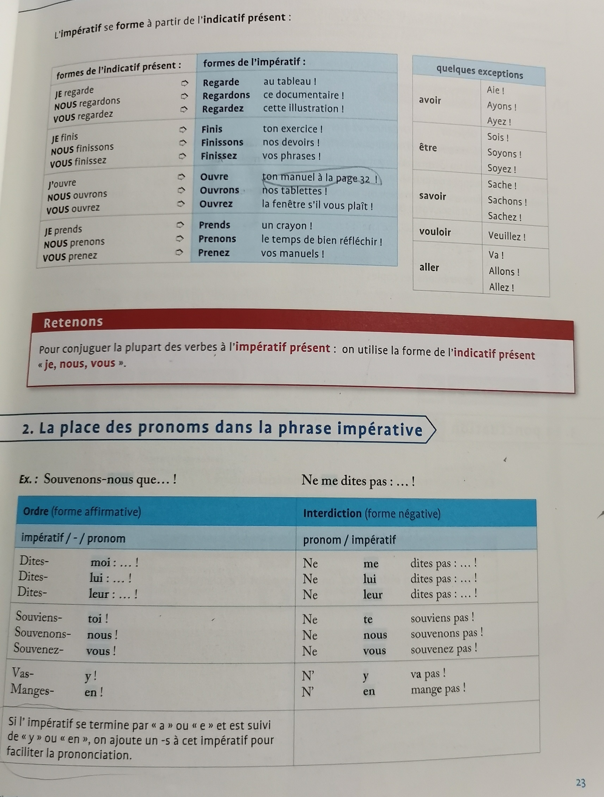

Le verbe de la phrase impérative est toujours à l'impératif!
Exemples : Sois ponctuel!
Tais-toi!
Mange
ta choucroute!
Mais: Je veux que tu
sois ponctuel!
Pour conjuguer les verbes à l'impératif présent, il faut consulter
l'indicatif présent.
| Indicatif présent |
Impératif présent |
| J'aime |
Aime! |
| Nous aimons |
Aimons! |
| Vous aimez |
Aimez! |
| Je finis |
Finis! |
| Nous finissons |
Finissons! |
| Vous finissez |
Finissez! |

Attention ! Ne confondez pas l’impératif avec le subjonctif !
L’impératif exprime un ordre plus impoliment que le subj.